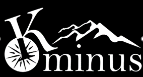
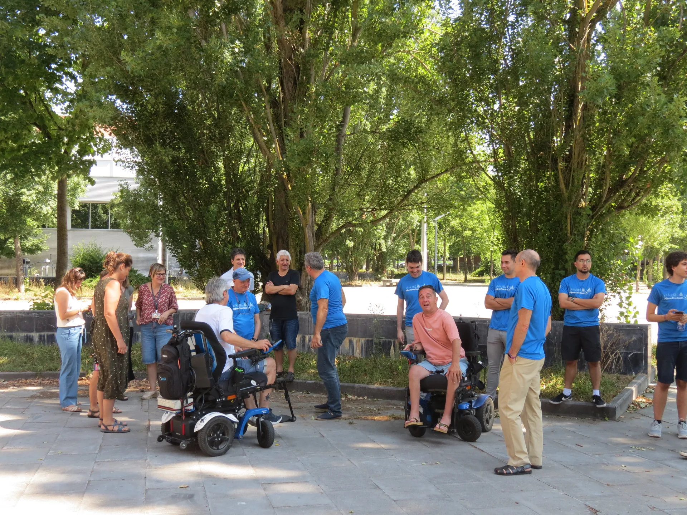

Mecánica
Chasis, suspensión, ergonomía y estructura para afrontar el terreno con confianza.

Ingeniería accesible · Vitoria-Gasteiz
Diseñamos movilidad todoterreno accesible para que más personas puedan llegar más lejos.
Conoce K-MINUSAccesibilidad que avanza
K-MINUS es una iniciativa de estudiantes de ingeniería y ADE de Vitoria-Gasteiz que diseña y desarrolla un vehículo off-road accesible y de bajo coste.
Queremos que las personas con movilidad reducida puedan disfrutar con seguridad y autonomía de bosques, rutas rurales y zonas de montaña. Para ello, desarrollamos una solución práctica, adaptable y pensada desde la escucha directa a quienes la usarán.

Diseñado con las personas
Trabajamos junto a la Asociación CaMinus, cuya experiencia orienta el diseño mediante un diálogo continuo. El resultado debe responder a necesidades reales: estabilidad, tracción, seguridad y una experiencia de uso intuitiva.
La tecnología tiene sentido cuando amplía posibilidades.
Un equipo, tres perspectivas
Chasis, suspensión, ergonomía y estructura para afrontar el terreno con confianza.
Sistemas de control y potencia para una movilidad segura, eficiente y fiable.
Una red de colaboración que acerca el proyecto a la comunidad y a sus aliados.
Lo que nos mueve
Galería
Instantes de una jornada compartida: pruebas, conversaciones y ganas de seguir construyendo.
¿Quieres sumar?
K-MINUS es un proyecto abierto a personas con ganas de aprender, aportar y transformar la movilidad.
Escríbenoskminus.ehu@gmail.com